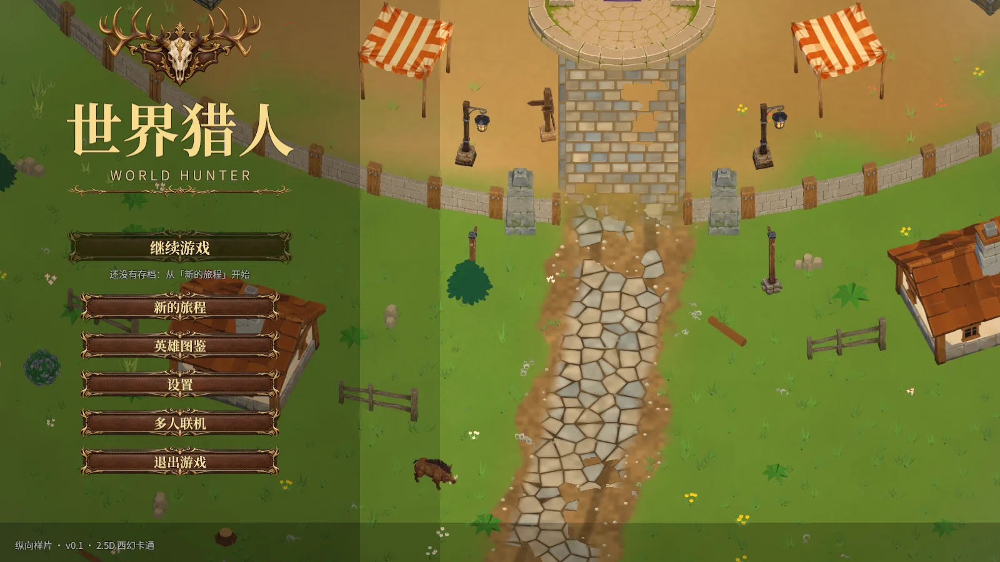
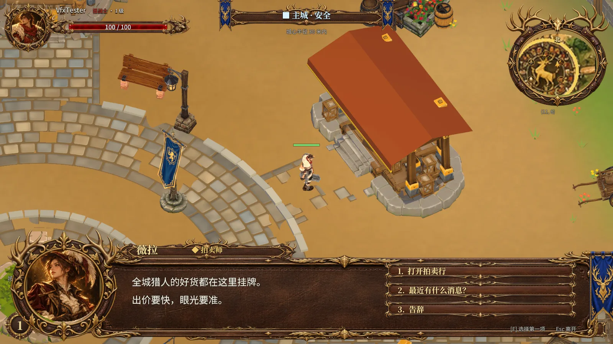
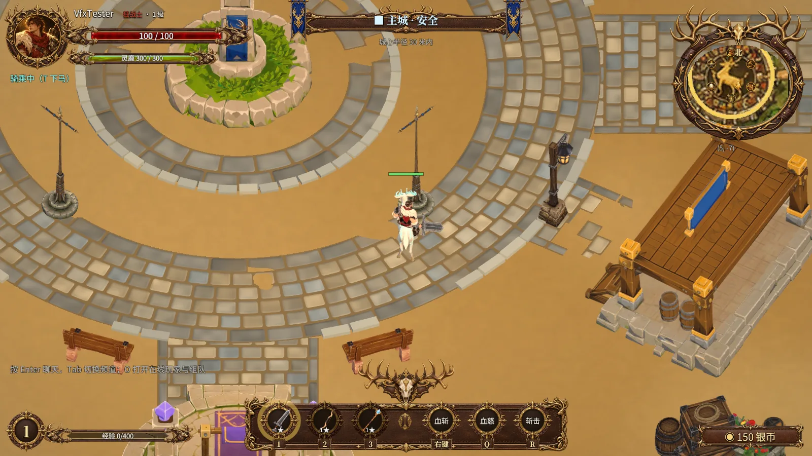

PLAYABLE
NOW ↗
NOW ↗
00 / 关于我
我说“要是有个这样的游戏就好了”，饼干说“好的”，然后它就真的做出来了。我说“这里不好玩”，饼干说“好的”，然后它就真的改了。下面这些，就是很多句“好的”攒出来的。
01—03 / 精选作品
从浏览器里的一局塔防，
到正在搭建的 3D 世界。
OUTLAST THE SHADOWS
提着王者剑闯进阿尔比恩的地牢，边走边砍，E 键甩出一道光波；在怪潮里升级、觉醒，试着活得更久。
非官方同人作品
03 / 开发中
一片正在生长的 3D 世界。越过河流、穿过森林，下一段冒险正在制作中。



BEYOND THE HORIZON
现在还不能试玩，先看看它的模样。